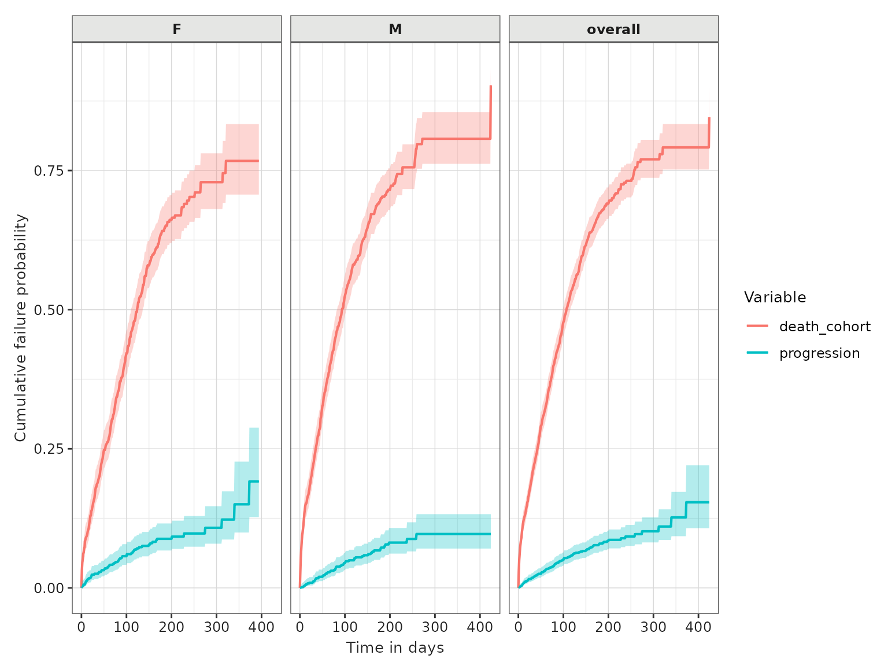

Competing risk survival
a02_Competing_risk_survival.RmdSet up
Let us first load the packages required.
We will create a cdm reference to use our example MGUS2 survival dataset again. In practice you would use the CDMConnector package to connect to your data mapped to the OMOP CDM.
cdm <- CohortSurvival::mockMGUS2cdm()We will proceed as we did with the single event survival, but this time we are considering an event of interest (progression of disease) with a competing risk (mortality).
All the details provided in the single event survival vignette are also valid in this study case: the potential input changes for the estimation, the different output formats available or the options for the table and plot functions. Everything discussed previously is also applicable when adding a competing outcome, as we will show in this vignette. Therefore we will not provide as much detail in all the possible combinations of inputs here, but rather focus in the particularities of estimating survival with an outcome and a competing outcome.
Let us take a glimpse at the three cohorts we will use this time: the mgus diagnosis as a target, and both the death cohort and the progression to multiple myeloma as outcomes.
cdm$mgus_diagnosis %>%
glimpse()
#> Rows: ??
#> Columns: 10
#> Database: DuckDB 1.4.2 [unknown@Linux 6.11.0-1018-azure:R 4.5.2/:memory:]
#> $ cohort_definition_id <int> 1, 1, 1, 1, 1, 1, 1, 1, 1, 1, 1, 1, 1, 1, 1, 1, 1…
#> $ subject_id <int> 1, 2, 3, 4, 5, 6, 7, 8, 9, 10, 11, 12, 13, 14, 15…
#> $ cohort_start_date <date> 1981-01-01, 1968-01-01, 1980-01-01, 1977-01-01, …
#> $ cohort_end_date <date> 1981-01-01, 1968-01-01, 1980-01-01, 1977-01-01, …
#> $ age <dbl> 88, 78, 94, 68, 90, 90, 89, 87, 86, 79, 86, 89, 8…
#> $ sex <fct> F, F, M, M, F, M, F, F, F, F, M, F, M, F, M, F, F…
#> $ hgb <dbl> 13.1, 11.5, 10.5, 15.2, 10.7, 12.9, 10.5, 12.3, 1…
#> $ creat <dbl> 1.30, 1.20, 1.50, 1.20, 0.80, 1.00, 0.90, 1.20, 0…
#> $ mspike <dbl> 0.5, 2.0, 2.6, 1.2, 1.0, 0.5, 1.3, 1.6, 2.4, 2.3,…
#> $ age_group <chr> ">=70", ">=70", ">=70", "<70", ">=70", ">=70", ">…
cdm$death_cohort %>%
glimpse()
#> Rows: ??
#> Columns: 4
#> Database: DuckDB 1.4.2 [unknown@Linux 6.11.0-1018-azure:R 4.5.2/:memory:]
#> $ cohort_definition_id <int> 1, 1, 1, 1, 1, 1, 1, 1, 1, 1, 1, 1, 1, 1, 1, 1, 1…
#> $ subject_id <int> 1, 2, 3, 4, 5, 6, 7, 8, 10, 11, 12, 13, 14, 15, 1…
#> $ cohort_start_date <date> 1981-01-31, 1968-01-26, 1980-02-16, 1977-04-03, …
#> $ cohort_end_date <date> 1981-01-31, 1968-01-26, 1980-02-16, 1977-04-03, …
cdm$progression %>%
glimpse()
#> Rows: ??
#> Columns: 4
#> Database: DuckDB 1.4.2 [unknown@Linux 6.11.0-1018-azure:R 4.5.2/:memory:]
#> $ cohort_definition_id <int> 1, 1, 1, 1, 1, 1, 1, 1, 1, 1, 1, 1, 1, 1, 1, 1, 1…
#> $ subject_id <int> 56, 81, 83, 111, 124, 127, 147, 163, 165, 167, 18…
#> $ cohort_start_date <date> 1978-01-30, 1985-01-15, 1974-08-17, 1993-01-14, …
#> $ cohort_end_date <date> 1978-01-30, 1985-01-15, 1974-08-17, 1993-01-14, …Estimating survival with competing risk
This package allows to estimate survival of both an outcome and
competing risk outcome. We can then stratify, see information on events
or summarise the estimates, among others, in the same way we did for the
single event survival analysis. The only additional requirement here is
to specify the competingOutcomeCohortTable argument.
MGUS_death_prog <- estimateCompetingRiskSurvival(cdm,
targetCohortTable = "mgus_diagnosis",
outcomeCohortTable = "progression",
competingOutcomeCohortTable = "death_cohort"
)
MGUS_death_prog %>%
asSurvivalResult() %>%
glimpse()
#> Rows: 850
#> Columns: 10
#> $ cdm_name <chr> "mock", "mock", "mock", "mock", "mock", "mock", "m…
#> $ target_cohort <chr> "mgus_diagnosis", "mgus_diagnosis", "mgus_diagnosi…
#> $ outcome <chr> "progression", "progression", "progression", "prog…
#> $ competing_outcome <chr> "death_cohort", "death_cohort", "death_cohort", "d…
#> $ variable <chr> "progression", "progression", "progression", "prog…
#> $ time <dbl> 0, 1, 2, 3, 4, 5, 6, 7, 8, 9, 10, 11, 12, 13, 14, …
#> $ result_type <chr> "cumulative_failure_probability", "cumulative_fail…
#> $ estimate <dbl> 0.0000, 0.0000, 0.0014, 0.0014, 0.0022, 0.0029, 0.…
#> $ estimate_95CI_lower <dbl> 0.0000, NA, 0.0004, 0.0004, 0.0007, 0.0011, 0.0015…
#> $ estimate_95CI_upper <dbl> 0.0000, NA, 0.0058, 0.0058, 0.0067, 0.0077, 0.0087…As we can see above our results have been outputted in long format, once transformed into the survival format. We can plot these results as we did in the previous vignette:
plotSurvival(MGUS_death_prog, cumulativeFailure = TRUE,
colour = "variable") +
theme(legend.position = "top")
The summary table of survival now has a row for each of the outcomes:
tableSurvival(MGUS_death_prog) | CDM name | Target cohort | Outcome type | Outcome name |
Estimate name
|
||
|---|---|---|---|---|---|---|
| Number records | Number events | Restricted mean survival | ||||
| mock | mgus_diagnosis | outcome | progression | 1,384 | 106 | 35.00 |
| competing_outcome | death_cohort | 1,384 | 869 | 260.00 | ||
With stratification
Again, to estimate survival for particular strata of interest we need these features to have been added to the target cohort table. We can them give the names of these strata columns to the estimating function like so:
MGUS_death_prog <- estimateCompetingRiskSurvival(cdm,
targetCohortTable = "mgus_diagnosis",
outcomeCohortTable = "progression",
competingOutcomeCohortTable = "death_cohort",
strata = list(c("sex"))
)As well as results for each strata, we will always also have overall results returned. We can filter the output table to plot only the results for the different strata levels, if we do not wish to add the overall cohort in the plot. We can also ask for the cumulative failure probability to be plotted instead of the survival probability, which makes more sense in the competing outcome case.
plotSurvival(MGUS_death_prog %>%
dplyr::filter(strata_name != "Overall"),
facet = "sex",
colour = "variable",
cumulativeFailure = TRUE)
And we also now have summary statistics for each of the strata as well as overall.
tableSurvival(MGUS_death_prog)| CDM name | Target cohort | Sex | Outcome type | Outcome name |
Estimate name
|
||
|---|---|---|---|---|---|---|---|
| Number records | Number events | Restricted mean survival | |||||
| mock | mgus_diagnosis | overall | outcome | progression | 1,384 | 106 | 35.00 |
| competing_outcome | death_cohort | 1,384 | 869 | 260.00 | |||
| F | outcome | progression | 631 | 55 | 40.00 | ||
| M | outcome | progression | 753 | 51 | 29.00 | ||
| F | competing_outcome | death_cohort | 631 | 374 | 245.00 | ||
| M | competing_outcome | death_cohort | 753 | 495 | 272.00 | ||
Disconnect from the cdm database connection
As always, we finish by disconnecting from the cdm.
cdmDisconnect(cdm)